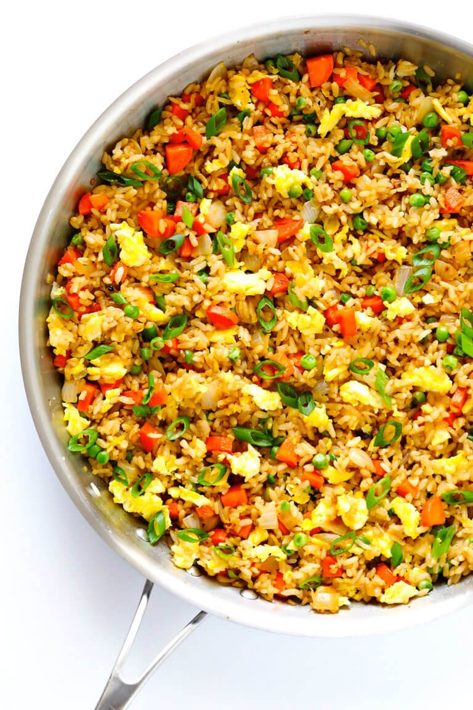

Favorite Fried Rice

Description
My favroite fried rice instant pot meal. Quick and Easy.
Ingredients
- 3 Tbsp Butter
- 2 Eggs
- 2 Medium Carrots
- 1 small onion
- 1/2 cup frozen peas
- 3 cloves garlic
- 4 cups cooked cold rice
- 3 green onions
- 3-4 Tbsp soy sauce to taste
- 2 tsp oyster sauce
- 1/2 tsp sesame oil
Steps
- Heat 1/2 tablespoon of butter in a large sauté pan* over medium-high heat until melted. Add egg, and cook until scrambled, stirring occasionally. Remove egg, and transfer to a separate plate.
- Add an additional 1 tablespoon butter to the pan and heat until melted. Add carrots, onion, peas and garlic, and season with a generous pinch of salt and pepper. Sauté for about 5 minutes or until the onion and carrots are soft. Increase heat to high, add in the remaining 1 1/2 tablespoons of butter, and stir until melted. Immediately add the rice, green onions, soy sauce and oyster sauce (if using), and stir until combined. Continue sautéing for an additional 3 minutes to fry the rice, stirring occasionally. (I like to let the rice rest for a bit between stirs so that it can crisp up on the bottom.) Then add in the eggs and stir to combine. Remove from heat, and stir in the sesame oil until combined. Taste and season with extra soy sauce, if needed.
- Serve immediately, or refrigerate in a sealed container for up to 3 days.